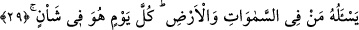

Allah Teâlâ’nın bâkî olan zâtını zikretmesi âşıkların gönülleri için bir tesellîdir. Yâni
siz üzülmeyin ben sizin için ebediyyen bâkî olacağım. Sizin için dünyada ulaştığınız
cemâlimin açılması ebediyyen hicabsız ve engelsiz kalacaktır. Celal sıfatının
zikredilmesi muhabbet ehline heyecan bahşetmek içindir. “Rabbike”deki müfret hitab
zamiri Allah’ın habibi Hz. Muhammed (s.a.)’e işâret etmektedir. Yâni zâtımı sana özel
olarak gösterdim, zâtım sana ebediyyen kapanmayacaktır. Sana uyan aşıklar benim
zâtımı görebileceklerdir. Allah’ın vechi, ey habibim ilk önce özel olarak sana, sonra
umuma açılacaktır. Bil ki, Bâkî’nin varlığının tamamı zâttan ibarettir. İlâhî tecellîler
değişiktir. Bir hadis-i şerifte, “Şübhesiz ki, Allah Teâlâ Ebû Bekir için hususî olarak,
müminler için umumî olarak tecellî eder” buyurulur. (Bkz. Süyûtî, el-leâliü’l-masnûa,
I, 263.)
29. Göklerde ve yerde bulunan herkes, O’ndan ister. O her an yaratma
hâlindedir.
Her şey, kendi şahısları için geçici veya sürekli olarak muhtac oldukları şeyleri dil ve
halleriyle devamlı isterler. Yaratılmışların tamamı mümkün olan hakikatleri yönünden
varlıklarını ve varlıklarıyla ilgili kemâlâtı kazanabilmekten çok uzaktırlar. Öyle ki,
kendileriyle ilâhî inâyet ve yardım arasındaki alaka bir an için kesilse, varlığın
kokusunu alamazlardı. Bu sebeple devamlı olarak Allah’a mürâcaat ederler ve
Allah’tan isterler.
İbn Abbâs (r.a.)’dan nakledildiğine göre; “Gökteki varlıklar Allah’tan mağfiret,
yerdekiler de hem rızık, hem mağfiret dilerler” demiştir.
Keşfü’l-esrâr’da gelmiştir ki, müminler ârifler ve âbidler olmak üzere iki gruptur.
Her birinin istemesi kendi gücü nisbetindedir. Her birine yapılan ihsân ve lütuf da
havsalasına göredir.
“Herkes kendi yüce himmetine göre
Malından fayda kazanır.”
Âbid ondan her şeyi ister, ârif ise bizzat O’nun kendisini ister. Ahmed b. Ebi’l-
Havârî Hakk’ı rüyasında gördü. Allah ona şöyle dedi: “Ey Ahmed! Ebû Yezîd hariç
bütün insanlar benden bir şey istiyorlar, oysa o sadece beni istiyor.”
Yücelikleri taleb için sana yürüdüm.
Benden başkaları maaş talebi için yürüdüler.
Âyet-i kerîmedeki hergün, vakitlerden her vakit, her andır. O da şu anda içinde